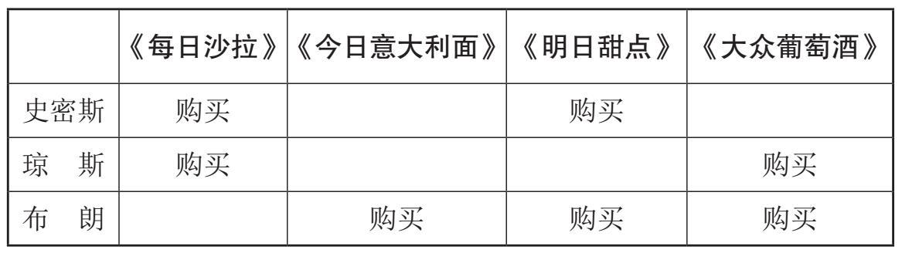
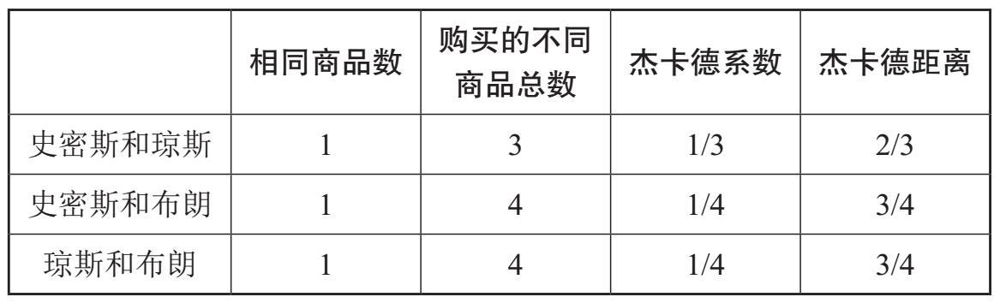
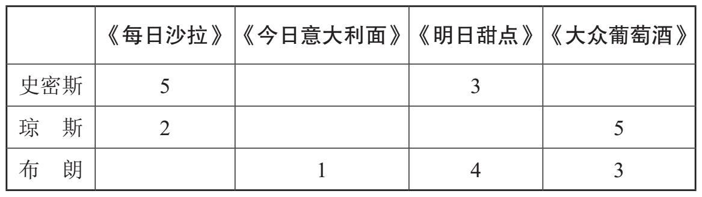

20世纪20年代，以“街角房子”咖啡馆闻名的英国餐饮提供商里昂公司，雇用了年轻的剑桥大学数学家约翰·西蒙斯做统计工作。1947年，雷蒙德·汤普森和奥利弗·斯坦汀福德双双被西蒙斯招募，派往美国做实情调查。正是这次美国之行，他们了解到电子计算机及其执行常规运算的能力。西蒙斯对他们了解到的情况非常重视，他设法说服里昂公司购买了一台计算机。
莫里斯·威尔克斯当时正在剑桥大学致力于建造电子延迟存储自动计算器（EDSAC）。在他的协助下，LEO计算机成功建成。该计算机依赖穿孔卡片运行，1951年首次用于基本会计事务，诸如将一列数字相加。到1954年，里昂公司已经形成了自己的计算机业务，并且正在建造“LEO II”系列，接着又建造了“LEO III”系列。尽管第一批办公计算机早在20世纪50年代就在安装使用，但由于它们使用电子管（“LEO I”系列是6000个）和磁带，加上内存太小的缺陷，这些早期的机器并不可靠，应用也非常有限。最初的LEO计算机被普遍看作第一台商业化计算75 机，它为现代电子商务铺平了道路。经过数次合并，里昂公司于1968年成为新组建的国际计算机有限公司（ICL）的一部分。
电子商务
LEO计算机和稍后出现的大型计算机，仅适合于诸如会计和审计之类的数字运算任务。传统上花费大量时间来统计数字列的工人，现在却要将时间花在制作打孔卡上，这不仅是一项烦琐的工作，同时还需要同样高的准确性。
由于在商业企业使用计算机已经可行，如何使用计算机提高效率，降低成本并收获利润，成了人们感兴趣的话题。晶体管的发展及其在市售计算机中的使用促成了机器的小型化，以至于在20世纪70年代初就有了建造个人计算机的想法。但是，直到1981年，IBM公司在市场上推出IBM—PC并使用软盘进行数据存储时，建造个人计算机的想法才真正开始为商家所认可。个人计算机的文字处理和电子表格功能，很大程度上减轻了办公室烦琐的日常工作。
用软盘存储电子数据的技术很快让人们想到，将来无须使用纸张即可有效地开展业务。1975年，美国《商务周刊》杂志发表的一篇文章推测，到1990年差不多会实现无纸化办公。理由是停止或显著减少纸张使用，办公会变得更为有效，成本也会降低。20世纪80年代，办公用纸曾一度下降，当时许多需要存档的文书工作被大量转移到计算机上。但随后在2007年，办公用76 纸上升到历史新高，增加的主要部分是复印。2007年以后，纸张使用逐步减少，这主要得益于人们使用越来越多的移动智能设备和诸如电子签名之类的工具。
尽管早期数字时代人们致力于无纸化办公的乐观愿望还未实现，但电子邮件、文字处理以及电子表格已经让办公环境发生了革命性变化。然而，让电子商务变得切实可行的，还是要归功于互联网的普遍使用。
家喻户晓的例子也许要算网购了。作为顾客，我们享受着在家购物的便利，不用再费时去排队。网购对顾客的不利方面很少，但由于交易类型的不同，与店员之间缺乏沟通可能会抑制在线购物。通过“即时聊天”，在线评论和星级评定，大量的商品和服务选择，以及慷慨的退货政策等在线客户引导工具，与店员缺乏沟通导致的问题正逐步消解。现在，除了购物，我们还能在线支付账单、处理银行业务、购买机票以及在线使用许多其他服务。
易贝的营运方式有些不同，并且值得一提，因为它生成的数据量很大。通过买卖竞价进行交易，易贝每天产生大约50Tb数据。这些数据是由190个国家或地区的1.6亿活跃用户在其网站上进行的搜索、售卖和竞拍所生成的。通过使用这些数据和适当的分析，易贝现在已经实现了类似于奈飞的推荐系统，本章稍后将进行讨论。
社交网站可为企业提供从酒店和度假到衣物、电脑和酸奶等所有方面的即时反馈。运用这些信息，商家能够明白什么可行，可行程度如何，什么会遭到投诉，以便在情况失控之前解决问题。更有价值的是，根据用户过往的购物及其在网站内的行77 为预测客户将要购买什么。社交网站，如脸书和推特，收集了大量的非结构化数据，若加以恰当分析，商家也可获得商业利益。猫头鹰（TripAdvisor）等旅游网站也与第三方共享信息。
点击付费广告
现在，专业人士越来越认识到，恰当运用大数据能够获得有用信息并吸引顾客，这些可以通过改进商品促销方式和使用针对性更强的广告来实现。我们只要上网，就不可避免地看到在线广告。我们甚至还可以在诸如易贝等各种竞拍网站上自己免费张贴广告。
点击付费模式，是最受欢迎的广告类型之一。它是一种在你进行在线搜索时弹出相关广告的系统。如果商家想要让其广告随同特定的搜索项显示，他们会向服务提供商出价购买与该搜索词相关联的关键字。商家还会设定每天预算的上限。系统多半会参照商家的出价高低来确定广告的显示顺序。
如果你点击其广告，广告商就必须按照报价向服务提供商支付报酬。商家仅在利益相关方点击其广告时才付费，因此广告必须与搜索项匹配才能吸引网络浏览者点击它们。先进的算法可确保为服务提供商（如谷歌或雅虎）带来最大的收益。实施点击付费广告最著名的，要数谷歌的“关键词广告”。当我们78 用谷歌搜索时，屏幕侧面自动出现的广告就是“关键词广告”工具生成的。点击付费广告的缺点是，可能会非常费钱，此外，为了让你的广告不占用太多空间，对使用的字符数也有限制。
电子欺诈也是一个问题。例如，竞争对手的公司可能会反复点击你的广告，以耗尽你的每日预算。或者通过使用一种被称为“点击机器人”（clickbot）的恶意计算机程序来生成点击。
这种欺诈的受害者是广告商，因为服务提供商的费用照付，而用户并没有参与。不过，由于确保安全性并保证商家有钱可赚最符合提供商的利益，因此服务提供商正在进行大量研究工作以打击欺诈。最简便的方法，大概是跟踪促成一笔买卖需要的点击量。如果点击量突然飙升，或者点击量巨大而没有实际购物，那就有可能存在欺诈性点击。
与这种点击付费的做法不同，定向广告明确基于每个人的在线活动记录。要搞清它是如何运作的，我们先来认真了解一下我在第一章中简要提到的“网络饼干”。
网络饼干
该术语最早出现在1979年，当时操作系统尤尼克斯（UNIX）运行了一款叫作“幸运饼干”（Fortune Cookie）的程序。该程序向基于大型数据库而生成的用户提供随机报价。“网络饼干”有几种形式，所有形式都源自外部，并用于记录网站和/或计算机上的某些活动。当你访问网站时，网络服务器会将一条由存储在计算机中的小文件组成的消息发送到浏览器。此消息就是“网络饼干”的一种，但是还有许多其他种类，例如用作用户认证目的和第三方跟踪的“网络饼干”。79
定向广告
你在互联网上的每一次点击都会被收集并用于定向广告。
用户数据将被发送到第三方广告网络，并以“网络饼干”的形式存储在你的计算机上。当你单击此网络支持的其他站点时，你以前查看过的产品的广告将显示在屏幕上。使用“光束”（一款火狐的免费附件），你可以跟踪哪些公司在收集你的互联网活动数据。
推荐系统
推荐系统提供过滤机制，基于用户兴趣向他们提供信息。其他类型的推荐系统（不基于用户的兴趣）实时呈现用户都在关注什么，并且通常都以“趋势”的形式来加以显示。奈飞、亚马逊和脸书都使用推荐系统。
向顾客推荐产品的一个流行方式是协同过滤 。笼统地说，该算法使用收集自单个顾客以往购物和搜索的数据，并将其与其他顾客喜恶商品的大数据库进行比较，以便为进一步的购物提供适当的推荐。不过，简单的比较通常并不能产生良好的效果。试看下面的例子。
假设网上书店向顾客出售烹饪书。推荐所有的烹饪书籍会很容易，但这不太可能确保顾客会购买。书籍太多，顾客无法根80 据自己的喜好选择。需要一种方法将推荐量减少到顾客可能会实际购买的数量。我们来看看三位顾客，史密斯、琼斯和布朗以及他们的购书情况（图19）。

图19 史密斯、琼斯和布朗购买的书
推荐系统面临的问题是，应该分别向史密斯和琼斯推荐什么书。我们想知道，史密斯更可能会购买《今日意大利面》还是《大众葡萄酒》。
要做到这一点，我们需要运用通常用来比较有限样本集的统计学方法，即所谓的杰卡德系数 。它指的是两个集合的交集数与两个集合的并集数的比值。通过交集的占比，该系数可衡量两个样本集之间的相似性。杰卡德距离用于衡量两个集合之间的差异，计算方法为“1减去杰卡德系数”。
我们再来看图19，可以看出史密斯和琼斯买的书有一本是相同的，即《每日沙拉》。他们总共买了三种不同的书：《每日沙拉》、《明日甜点》和《大众葡萄酒》。这样，他们的杰卡德系数为1/3，杰卡德距离为2/3。图20显示了所有可能的客户对的计算结果。
史密斯和琼斯之间的杰卡德系数或相似分数，比史密斯81 和布朗之间的更高。这表明史密斯和琼斯的购物习惯更为接近——因此我们向史密斯推荐《大众葡萄酒》。我们该向琼斯推荐什么呢？史密斯和琼斯之间的杰卡德系数比琼斯与布朗之间的更高，于是我们向琼斯推荐《明日甜点》。

图20 杰卡德系数和距离
现在假设客户使用五星级系统对购买进行评分。为了利用这些信息，我们需要找到对特定书籍给予相同评级的其他客户，看看他们还购买了什么以及购买历史如何。每次购物的星级评定如图21所示。

图21 购物星级评定
在该示例中，我们使用了一种被称为余弦相似度度量 的不同计算方法，该方法也将星级评定考虑在内。对于此计算来说，星级评定表给出的信息代表向量。向量的长度或大小归化为1，不再参与计算。向量的方向用作发现两个向量的相似程度以及82 谁的星级评定最高。根据向量空间的理论，找到两个向量之间的余弦相似度值。这种计算方法与我们熟悉的三角函数方法大不相同，但基本属性仍然保持余弦取0到1之间的值。例如，如果我们发现两个分别代表星级评定的向量之间的余弦相似度为1，那么它们之间的角就是0，因为余弦（0）=1。这种情况下，它们一定重合，于是可以得出如下结论：他们的趣味相同。余弦相似度数值越大，趣味的相似度也越高。
如果你想看数学细节，本通识读本末尾的“进一步阅读”部分提供有参考书目。在我们看来，有趣的是史密斯和琼斯之间的余弦相似度是0.350，史密斯和布朗之间是0.404。这是先前结果的逆转，先前的结果显示，史密斯和布朗的趣味比史密斯和琼斯的更接近。此矛盾可初步解释为，史密斯和布朗对《明日甜点》的看法，比史密斯和琼斯对《每日沙拉》的看法更接近。
我们将在下一节中介绍奈飞和亚马逊都在使用的协同过滤算法。
亚马逊
1994年，杰夫·贝佐斯创立了卡达布拉网站，但不久后更名为亚马逊。1995年亚马逊网站上线，最初是一家线上书店，现在已发展成为一家在全球拥有3.04亿客户的国际电子商务公司。它生产和销售范围广泛，从电子设备到书籍应有尽有，甚至通过亚马逊生鲜服务提供新鲜食品，诸如酸奶、牛奶、鸡蛋等。它还是一家领先的大数据公司，亚马逊网络服务运用基于海杜普的开发成果，能为企业提供基于云的大数据解决方案。
亚马逊收集的数据包括：买了哪些书？哪些书顾客看了但没有买？他们找书花了多长时间？某本书他们看了多长时间？83 以及他们保存到购物车里的书是否被最终购买？他们能从这些数据中计算顾客每月或每年购买书籍的花销，还可以确定他们是否为老主顾。早期，亚马逊对收集的数据使用标准统计技术来进行分析。抽取个人样本，基于发现的相似度，亚马逊会向顾客提供更多类似的书籍。2001年，亚马逊研究人员又前进了一步，他们申请了一项名为“项对项协同过滤”技术的专利，并获得了成功。此方法查找相似的商品，而不是相似的顾客。
亚马逊收集大量的数据，包括地址、支付信息，以及个人在亚马逊上浏览过或买过的所有物品的详细信息。亚马逊运用其数据，竭力进行着客户市场研究，以激励顾客把更多的钱花在它那里。例如，就书籍而言，亚马逊不仅提供大量选择，还对单个顾客提出重点建议。如果你订阅了“亚马逊金牌服务”（Amazon Prime），它还会跟踪你观看电影和阅读书籍的习惯。许多客户使用具有GPS功能的智能手机，从而方便了亚马逊收集时间和位置的数据。如上大量数据被用来构建客户画像，从而实现为相似的个人推荐类似的物品。
2013年起，亚马逊开始向广告商售卖客户元数据，以提升其网络服务运营，结果大获成功。对作为云计算平台的亚马逊网络服务来说，安全是至关重要和全方位的。为确保只有得到授权的人才能获得客户账户，亚马逊使用了众多安全技术，比如口令、密钥对和数字签名等。
亚马逊自己的数据同样使用AES（高级加密标准）算法进84 行多重保护和加密，并存储于世界各地的专用数据中心。运用工业标准SSL（安全套接层），在两台机器——如你的家用计算机和亚马逊——之间建立安全连接。
基于大数据分析，亚马逊在预期出货 方面独领风骚。其理念是运用大数据预估客户会订购何物。起初，这一想法是为了在订单实际兑现之前将物品运至配送中心。服务稍作延展，物品可随获得免费惊喜礼包的幸运客户订单一并发送。根据亚马逊的退货政策，这不是一个坏主意。可以预见，大多数客户将保留他们订购的商品，因为这些物品是基于其个人喜好，通过使用大数据分析找到的。亚马逊2014年在预期出货方面的专利项目还表明，赠送促销礼品可以买来诚意。为了诚意，也为了通过目标营销增加销售量和缩短交货时间，这一切都让亚马逊相信这种冒险很值得。亚马逊还为无人机送货申请了一项专利，称为“金牌空运”（Prime Air）。2016年9月，美国联邦航空管理局放宽了商业机构放飞无人机的规定，允许他们在高度受控的情况下，飞越操作人员的视野范围之外。这可能是亚马逊寻求在订单提交后三十分钟内发货的第一块敲门砖。也许在你的智能冰箱传感器显示牛奶快要用完之后，无人机配送就开始了。
位于西雅图的“亚马逊购”（Amazon Go）是一家食品便利店，也是第一家此类商店，在此购物无须结账。截至2016年12月，商店只服务于亚马逊员工，原计划2017年1月向公众开放，但已经宣告延期。目前，仅有的技术细节只能通过两年前提交的专利申请获得。专利描述了一种无须逐项结账的系统，在客户购物过程中，其实际购物车的商品详情会被自动添加到虚拟85 购物车里。只要他们拥有亚马逊账号和安装有“亚马逊购”应用程序的智能手机，他们离店通过过渡区时，电子支付就会自动完成。该系统基于一系列数量众多的传感器，它们用来鉴别物品何时从货架上被拿走，或者何时又放回到了货架上。
该系统会给亚马逊生成大量有价值的商业信息。显然，既然从进店到离店期间的每一步购物行动都被记录在案，亚马逊就能够运用这一数据为你下一次前来做好推荐，方式与其在线推荐系统相仿。不过，考虑到对隐私的保护，有些做法很可能会涉及对隐私的侵犯，比如专利申请中提到的使用人脸识别系统鉴别顾客的手段。
奈飞公司
硅谷的另一家公司——奈飞公司，成立于1997年，起初只是免费邮寄DVD的租赁公司。你选择一张DVD后，可以将另一张添加到队列中，它们会被依次发送给你。你还可以对队列进行优先级排序，这一点很有用。这种服务目前仍然存在且获益颇丰，尽管似乎有逐渐消亡的趋势。如今，奈飞已成为国际互联网流媒体供应商，在190个国家或地区拥有约7500万订户。
2005年，奈飞公司成功扩展，开始提供自己的原创节目。
奈飞公司收集和使用大量数据以改进客服，例如在努力提供可靠的电影流媒体的同时，积极向单个客户提供个性化的推荐。推荐是奈飞商务模式的核心，其大部分业务都归功于基于86 数据分析后为客户所做的推荐。奈飞现在可以跟踪你观看的、浏览的或搜索的内容，以及执行这些操作的日期和具体时间。
它还会记录你是否正在使用苹果平板电脑、电视或其他设备。
2006年，奈飞公司启动了一项旨在改进其推荐系统的大奖赛。它提供100万美元的奖金，征求能将用户电影评级的预测精度提高10%的协同过滤算法。奈飞提供了超过1亿项的训练数据，用于此次机器学习和数据挖掘竞赛——几乎是可以获得的全部数据。奈飞提供的价值5万美元的中期奖金（进展奖），于2007年由科贝尔团队获得。该团队解决了一个相关的但比较容易的问题。“比较容易”在此是个相对的说法，因为他们的解决方案综合了107种不同的算法后才最终得出两种算法。这两种算法仍在不断改进中，奈飞公司也一直在使用。据测算，这些算法符合1亿条用户电影评分，但要获得全部奖金，算法必须符合50亿条评分。全奖最终于2009年颁给了BPC团队，该团队的算法比现有算法提高了10.6%的预测精度。奈飞公司从未完全采用获奖的算法，主要因为此时他们的商业模式已经发生了改变，变成了我们现在所熟悉的流媒体。
在奈飞公司将其商业模式从邮寄服务扩展到通过流媒体提供电影后，他们便能够收集有关客户喜好和观看习惯的更多信息，而这又能让他们提供更好的推荐。然而，奈飞公司也有背离数字形态的做法。他们在全球雇用了总共大约40位兼职标记员，让他们观看电影，根据内容贴上标签，比如“科幻”或“喜剧”等。这就是电影的分类方式——最初使用人工判断，而不是计算机算法。计算机算法是下一步的事。87
奈飞公司运用多种推荐算法，合成了一个推荐系统。所有这些算法都基于公司收集的聚合大数据来进行运算。例如，基于内容的过滤通过分析标记员提供的数据，并根据题材和演员等条件找出类似的电影和电视节目。协同过滤监测你的观看和搜索习惯之类的事情。推荐是基于具有相似口味的观看者所观看的内容，但当有不止一人使用同一个账号时，推荐成功率会下降，常见的情况是家庭的几个成员，他们的口味和观看习惯不可避免地会有所不同。为了解决这一问题，奈飞公司为每个账号创建了多重配置的选项。
互联网点播电视，是奈飞公司的另一个增长点。随着大数据分析的不断发展，它将变得越来越重要。除了收集搜索数据和星级评定之外，奈飞现在还能够记录用户暂停或快进的频率，以及他们是否看完了他们打开的节目。奈飞还监视观看节目的方式、时间和地点，以及其他许多变量，这里无法一一提及。据我们所知，运用大数据分析，奈飞现在甚至能够十分准确地预测客户是否会取消订购。
数据科学
“数据科学家”是送给在大数据领域工作人员的通用头衔。
2012年的《麦肯锡报告》强调了数据科学家的缺乏，估计到2018年，数据科学家的短缺仅在美国就达到19万之多。这种趋势在全世界都很明显，尽管政府在积极推动数据科学技能的训练，但专业知识供需的鸿沟似乎仍在扩大。数据科学正成为大学里热门的学习对象，但是到目前为止，毕业生一直无法满足工商业界88 的需求，只有工作经验丰富的申请人才可以获得高薪。大数据对商业企业来说事关利润。如果经验不足的数据分析师不堪重负，未能提供预期的积极成果，那么希望很快就会破灭。很多时候，公司都在寻找“万能的”数据科学家，期望他能够胜任从统计分析到数据存储和数据安全的所有工作。
数据安全对任何公司都事关大局，大数据会产生自己的安全性问题。2016年，由于数据安全问题，奈飞取消了第二阶段算法大赛。近年来的其他黑客事件包括，2013年的奥多比公司（Adobe），2014年的易贝和摩根大通银行，2015年的安森保险（一家美国健康保险公司）和卡丰手机商贸，2016年的聚友网（MySpace），还有2012年就遭到黑客侵入，但直到2016年才发现被攻击的全球最大职业社交网站领英（LinkedIn），等等。这仅是少数几例，还有很多公司遭到黑客攻击或者其他类型的安全破坏，导致敏感信息未经授权就被传播。在第七章中，我们将89 深入探讨一些大数据安全漏洞。